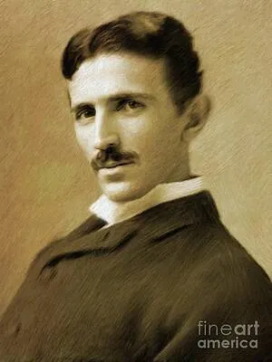

NIKOLA TESLA
The Most Brilliant and Accentric Inventer

About
Nikola Tesla was one of history’s most brilliant and eccentric inventors,
electrical engineers, and physicists. Born on July 10, 1856, in Smiljan (which was part
of the Austrian Empire at the time, now in Croatia), Tesla is best known for his pioneering
contributions to the development of alternating current (AC) electricity, which is the standard
electrical power system used worldwide today.
🧒 Early Life and Education
Birth: July 10, 1856, in Smiljan, Austrian Empire (now Croatia), into a Serbian family.
Parents:
Father: Milutin Tesla, a Serbian Orthodox priest and writer.
Mother: Đuka Mandić, who, despite no formal education, was known for inventing small household appliances — Tesla credited her for his inventive abilities.
Education:
Studied electrical engineering at the Austrian Polytechnic in Graz, and later attended the Charles-Ferdinand University in Prague, although he never completed a degree.
Exceptionally gifted in math and had a photographic memory.
🏛️ Legacy
- The Tesla unit (for magnetic flux density) is named after him.
- The Tesla electric car company, founded by Elon Musk and others, honors his name.
- Numerous books, movies, and documentaries explore his life.
- Seen as a symbol of the misunderstood genius—a cult figure in both scientific and pop culture
communities.
🛠️ Key Inventions (Detailed)
⚡ Alternating Current (AC)
Developed a polyphase AC system (generators, transformers, and motors).
Partnered with George Westinghouse to promote AC, which became the global standard.
AC won over DC in the so-called “War of Currents.”
⚙️ AC Induction Motor
Invented in 1887.
No brushes or commutators, making it more durable and efficient.
Used in modern appliances, elevators, electric cars, and industrial machinery.
🔋 Tesla Coil
Created in 1891.
Used in early radio technology and high-voltage experiments.
Produces spectacular electrical arcs—often used in educational demonstrations.
📡 Wireless Communication
Developed equipment for wireless transmission of data and energy.
Filed radio-related patents before Marconi.
Supreme Court (1943) credited Tesla as the inventor of radio after his death.
🎮 Remote Control
Demonstrated a radio-controlled boat in Madison Square Garden in 1898.
Audiences believed he was using magic or telepathy.
🌐 Wardenclyffe Tower
Built on Long Island with funding from J.P. Morgan.
Aimed to transmit wireless power and communication globally.
Abandoned due to financial issues and skepticism; tower demolished in 1917.